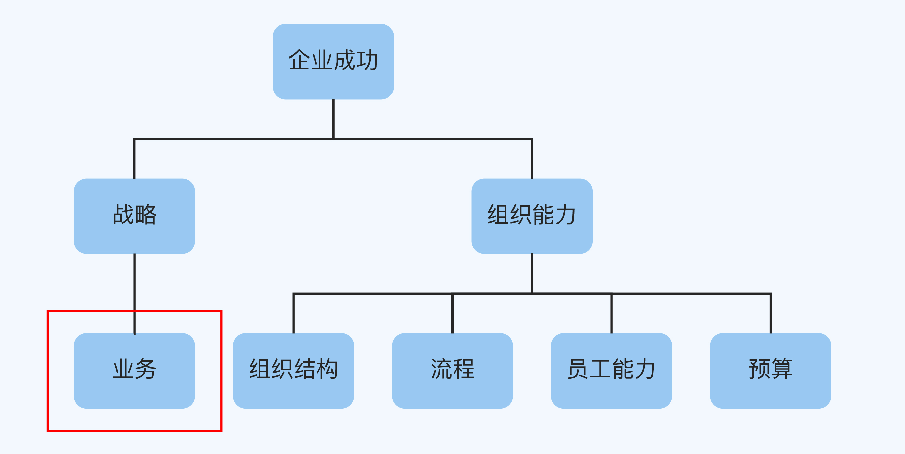
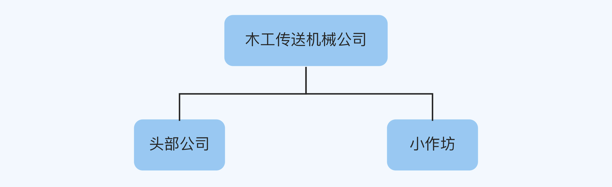
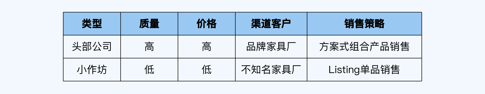
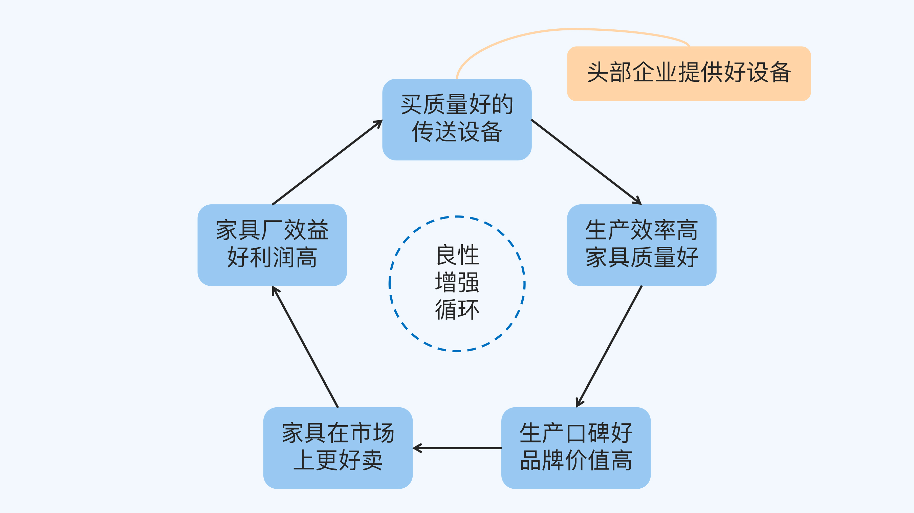
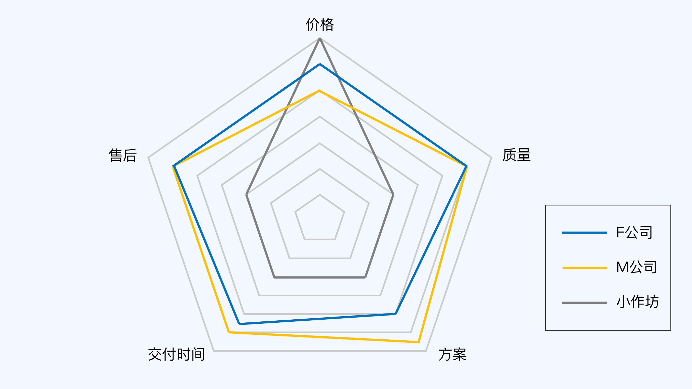
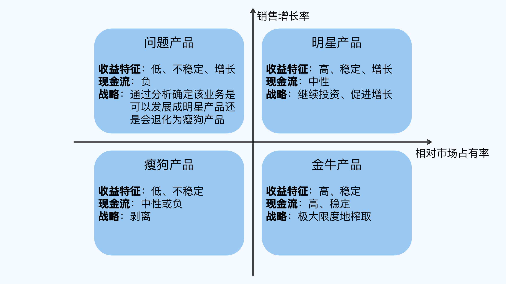

- 00 开篇词 为什么每个人都应该学会复盘？.md.html
- 01 CLAP模型：一个优秀的复盘模型是什么样的？.md.html
- 02 OPTM框架：怎么使用CLAP模型？.md.html
- 03 教练技术：怎么做复盘才能化解冲突？.md.html
- 04 制度和文化：怎么营造复盘环境？.md.html
- 05 三角法：怎么组建复盘团队？.md.html
- 06 MECE原则：怎么准备复盘资料？.md.html
- 07 五步法：如何召开一次高效的复盘会议？.md.html
- 08 事实比较：如何快速比较目标与结果？.md.html
- 09 分析原因：梳理逻辑时怎样找到切入点？.md.html
- 10 洞察规律：怎样更新认知才能找准发力点？.md.html
- 11 OKR：怎样根据复盘结论制定计划？.md.html
- 12 Double Check：怎么检查评估一次复盘的效果？.md.html
- 13 案例导学：我是怎么帮助企业做复盘的？.md.html
- 14 战略升级：5年增长100倍的跨境电商做对了什么？.md.html
- 15 业务关键点：改进一个点业绩增长50%？.md.html
- 16 组织结构设计：变动一个职位，就能带来100万_月的增量吗？.md.html
- 17 高效赋能：怎么建立流程才能把人效提升3倍？.md.html
- 18 人才培养：怎么把人才转化成实际生产力？.md.html
- 19 预算制定：人头和财务预算到底怎么定？.md.html
- 春节荐书（一）《原则》：在不确定中找到确定.md.html
- 春节荐书（二）《人类简史》：故事的力量.md.html
- 结束语 复盘，见天地见众生见自己.md.html
- 捐赠
15 业务关键点：改进一个点业绩增长50%？
你好，我是张鹏！
上一讲我讲述了一家公司通过战略升级获得新生的案例。但是如果从战略上看不出有明显的问题，我们应该从哪里着手找到业务的增量空间呢？
战略改革属于巨大的创新，不过在原有的战略模式下进行微创新（或者说优化），可能也会带来意想不到的效果。

这一讲，我要为你分享的就是一个改进业务关键点，从而让业绩增长50%的案例。
案例背景：增长停滞
F公司是一家做木工传送机械的公司，总部和生产基地位于佛山，市场上处在行业前三的位置。他们的终端客户是各大家具企业，包括顾家、欧派和索菲亚等。这些企业为了减少家具在内部运输时的损坏，提升运输效率，会用到包括辊筒、传送带和升降台等设备在内的自动化分拣传送系统，F公司就是生产这些设备的公司。
我在接手这个项目的时候，这家公司正面临着连续三年几乎0增长的困局。
在内部调研“为什么会出现这种情况？”的时候，我听到最多的回答是“我们产品的价格太高了，不好卖。”
因为价格太高所以不好卖，这似乎是每个行业最容易找到的答案，但是在一个专业的顾问看来，它很有可能只是一个借口。
前期调研
由于F公司并没有现成的数据资料供复盘使用，所以我不得不先花一些时间做前期的调研工作。
既然大家都觉得是因为价格高导致产品不好卖，那么我就从价格开始进行调研。请注意，虽然有可能最终问题（产品不好卖）的原因不一定是这个（价格高），但是任何商业问题只要找到一个合适的切入点，一般都能顺藤摸瓜地把整个价值链搞清楚。
价格到底高不高，我们自己说了不算，需要和全行业进行对比。所以，我把销售在市场上遇到的竞争对手的同类产品价格都调研了一遍。
我发现这个行业很特别，头部公司和小作坊的业绩单个对比，差不多有10倍的差距，但是中间却没有的腰部公司过渡。于是我把竞争对手按照MECE原则做了一个分类，如下图所示。

前期的调研到这里就差不多完成了。
复盘详解
F公司的问题是“因为产品价格高导致不好卖”，因此对比的参照物就不是自身的历史目标了，而是同行横向对比了（自身的结果与同行标杆作为目标对比）。另外，如果只对比价格，可能不能找出全部的问题，因此，我们必须用到更全面的用户决策框架。
对比
“好不好卖”是营销问题，我按照适合营销分析的4P理论框架对这个行业做了一个梳理：
- 价格（Price）：在这个细分行业，几家头部企业包括F公司自身，产品的售价都不算低，小作坊主要是靠绝对的低价获取订单；
- 产品（Product）：头部公司虽然价格高，但是质量、维保都有保障，而小作坊则是绝对的低价低质；
- 渠道客户（Place）：头部公司的客户基本对应的都是品牌家具厂商，基本囊括了所有的品牌家具厂商，而小作坊的客户基本是不知名的小家具厂；
- 销售策略（Promotion）：头部公司针对大客户以方案式组合产品销售为主，而小作坊是以直接卖单品的Listing销售方式为主。

另外，我在对业内厂家做生命周期的调研时发现，头部公司的存续期往往已经超过10年，而小作坊的生命周期普遍都不长，大多数熬不过3年。
逻辑
理论上，同类低价产品在市场上有绝对的竞争力，为什么这些小公司会很快死掉呢？那些大公司的产品价格都很高，为什么他们反而会存活很长时间呢？
为了搞清楚这个问题，我画了一个因果循环图：

通过因果循环图的对比，我们可以看出：
- 品牌家具厂用了更好的设备，能够更高效地生产出质量更好的家具，从而在市场上取得更大的回报，所以更愿意采购质量好的家具，从而形成良性循环。
- 不知名家具厂考虑成本比较多，采购了不太好的设备，可能会导致故障率高、坏损率高和规格不标准等问题，很难有核心竞争力，从而陷入恶性循环。
接着，我让F公司的复盘团队调出过往的CRM与合同档案进行统计，发现因为价格高的丢单数虽然比较多，但是总额并不高，在整个公司的订单总金额占比也不大；而且这些丢单都发生在一些没有经验的新手销售身上，跟单的对象都是一些不知名的家具厂。
分析到这里，所有人几乎都明白了，F公司的竞争对手并不是那些小作坊，高价也不是导致业绩增长停滞的“阿克琉斯之踵”。F公司和其他头部公司相比，市场占有率确实是有下降的，这才是真正需要关注的重点。
所以，F公司真正需要回答的问题是：他们和其他头部公司有什么不同？
面对同样的客户群体，这个行业的头部公司是通过定方案、买产品以及之后的一系列交付服务来体验价值的，我们对这个部分做了一个价值链分析：
我们把客户能感知到的部分，与撞单最多的头部公司M和小作坊做了逐项对比，并画出一张雷达图：

可以看出，F公司如果和M公司对比，质量、交付时间和售后方面的几乎没有区别，价格上甚至更有优势，它们真正的差距在方案上。
所以我们针对方案做了进一步的调研，发现：
- F公司自己的方案都是销售人员在做，连统一的格式都没有，同样的产品方案，报价也千差万别，方案质量差得不是一点半点。
- M公司有一套标准的方案生成流程，由专职的方案中心负责。
认知
对手总是最好的老师！F公司也开始成立了一个方案中心，专职负责做方案，方案的质量和速度果然有了极大的提升。
不过，光靠速度的提升和方案的标准化，就能把交付流程优化到极致吗？并没有！因为成立方案中心只是提升了公司内部的质量和效率，并没有让整个业务链条产生根本性的变革。
所以我们继续深挖。这一次，我们期待找出最好卖的（容易成交）、利润最高的业务，于是使用了波士顿矩阵来分析实际订单情况：

我们发现：
- 金牛产品是 “10万左右的标准化单品”。
- 明星产品是“单额过100万的智能化分拣装置”。
- 问题产品是“单额50万的左右的标准化集成方案”。
- 瘦狗产品是“单额低于50万的定制化集成方案”。
在应用波士顿矩阵的时候，通常最大的变数是问题产品。很明显，F公司之前一直忽视了这个点，而他们是有能力把50万的标准化集成方案做到更高层次的。
规划
根据以往客户和订单的数据分析，F公司最终把年目标定成增长50%，主要的策略包括：
- 主攻品牌家具商，重新梳理客户名单，留下客户名单池。
- 砍掉了50万以下的定制集成方案。
- 方案中心帮助销售梳理方案，同时根据市场需求打磨50万单额的标准化方案。
- 未来保持品牌影响力，每年超过100万的订单只做5个左右，并且只针对行业标杆客户。
最终结果：破茧重生
这样一波操作下来，F公司取得了什么样的成效呢？
2020年，在受到新冠疫情影响导致60天无法开工的情况下，他们的营业额依然增长了50%，利润增长接近100%，结束了连续三年0增长的困境，又重新回到了指数型增长的状态。
对于未来几年，他们已经有了更大的战略构想。
小结
这一讲我为你介绍了F公司的案例。面对连续三年0增长的困境，大部分人的想法是“产品价格高所以不好卖”。我以产品价格作为切入点开展调研和分析，帮助F公司改进业务关键点，实现了大幅增长，具体过程包括：
- 首先使用逻辑树来对行业玩家进行划分（头部和小作坊），明确真正的竞争对手。
- 然后使用4P理论分析营销问题，对比找出F公司作为头部公司在产品营销中的优劣势。
- 接着再用因果循环图对假设进行推导，找出增强循环，确定未来的发展方向。
- 之后结合调研数据，使用雷达图（关系图）找出下一阶段需要改进的重点。
- 最后使用波士顿矩阵图找出颗粒度更精细的发力点。
这些工具都是我在实操流程篇中提到的，希望这个案例帮助你理解，让你在优化业务的关键点时找到思路。
思考题
这就是这一讲的全部内容了，最后留一道思考题给你：
你能否用这一讲的方法和工具（4P理论、雷达图、波士顿矩阵等），就一个具体的案例分析自己公司的产品与竞争对手的差异？
欢迎你把答案写在留言区，和我一起讨论。
© 2019 - 2023 Liangliang Lee. Powered by gin and hexo-theme-book.